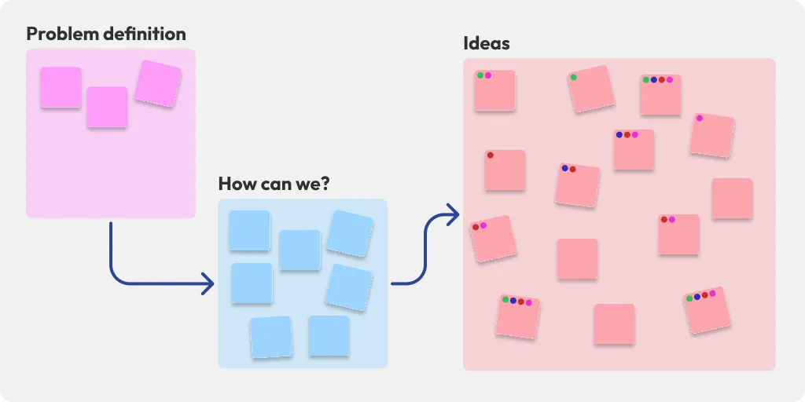
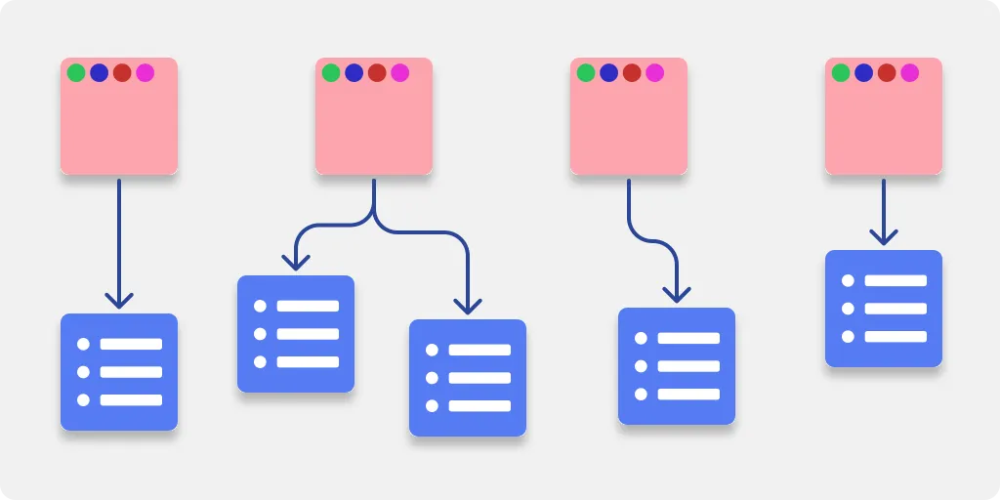
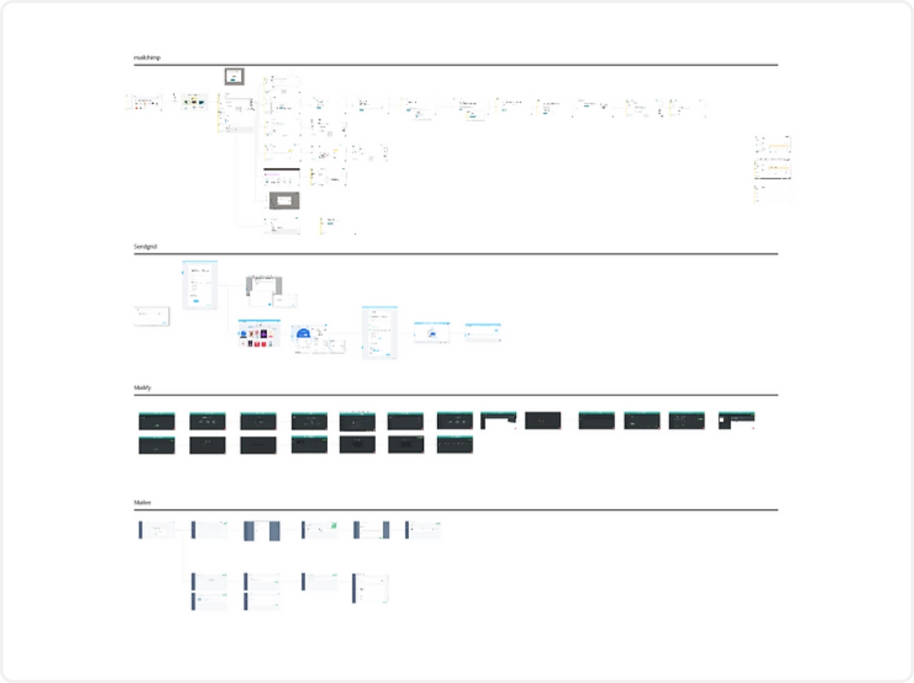

Email Marketing

Umbler
UI
Desktop
Project
Email Marketing initially served as a trial to gauge client engagement, as some users were accustomed to sending the same email to multiple recipients. My responsibility involved enhancing the overall usability of the initial version by incorporating researched data and leveraging UX expertise.
Goals
- Create a streamlined user flow for seamless new campaign creation
- Develop a user-friendly method for creating and utilizing contact lists
- Implement an intuitive interface to facilitate the discovery of specific campaigns
Understanding the current flow
The initial step involved comprehending the first version of the tool, exclusively accessible to a select group of clients who sent one email to multiple recipients. Understanding the usability challenges faced by these early testers was crucial in identifying the most effective areas for improvement.

The process

Problem definition and brainstorming
The team collaborated to brainstorm and explore opportunities, defining key issues from the first version and ideating solutions. We then used dot voting with stakeholders to prioritize the most impactful ideas.

Chosen solutions
After reaching a consensus within the team, we narrowed down the selection to only those ideas that promised the best outcomes relative to the effort we aimed to invest in the task.
The User flow
At this stage of the process, I recognized the importance of developing a user flow to visualize how the chosen ideas would be implemented and to identify the specific points in the flow where the user experience would be affected.

Competitors audit
To further support our decisions, I conducted a comprehensive competitors' audit, examining the user flows of several prominent companies in the same market segment as ours. Collecting this data proved crucial in validating the sequence of the new flow I intended to design.During the audit, specific pain points of our competitors became evident, including:
➕
Lengthy setup processes for initiating a new campaign
👥
Challenges in adding new contacts or contact lists
👁️
Lack of visibility on campaign costs, credits, or expenses in most competitor platforms

Wireframing
Having completed the research phase, I proceeded to develop wireframes representing the ideal end result, incorporating all the previously agreed-upon ideas. The primary focus was to maintain simplicity, preserving the visual design elements from the initial version of the tool. Additionally, I prioritized optimizing mobile usability to cater to smartphone users.
Drag to view all


Results
Seamless navigation
As a result, the process of creating a new campaign became notably simple and remarkably faster in comparison to competitors. The key highlights of the new flow include:
Streamlined campaign creation with all settings and options conveniently located in one place.
Clear visibility of available credits and credit usage for each campaign.
Drag to view all


Create contact lists
Users can effortlessly create new contact lists from their saved contacts, reuse existing contact lists, and import contact information from an XLSM document. Notably, the entire flow can be completed solely using the keyboard to enhance accessibility.

Layout Improvements
As a final challenge, the layout of the campaigns and contact lists required a focus on simplicity and ease of navigation, addressing a common issue observed in some of our competitors' platforms.

Final Considerations
As an improvement project, the primary objective was not to overhaul the entire tool's design but to enhance specific areas crucial for delivering an improved user experience, based on the insights gathered from the first version.
The recent changes made to the Email Marketing tool are now accessible and usable for all users. To try it out, you can access the updated version via Umbler's email service.